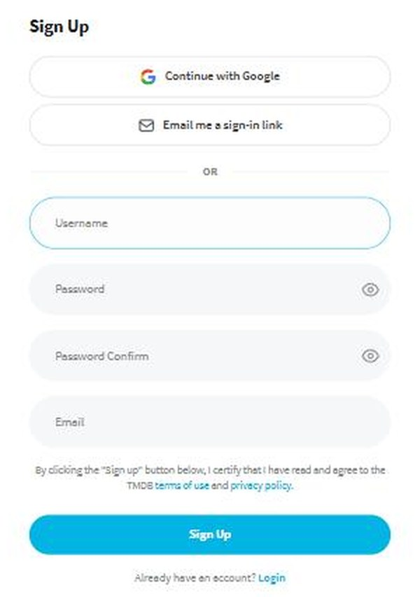
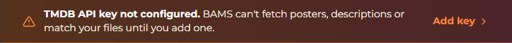
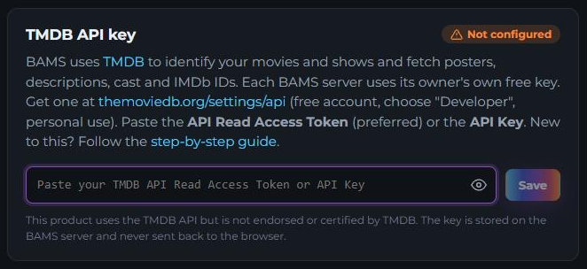

Get your free TMDB key
BAMS looks up your movies and shows on TMDB (The Movie Database) to get posters, descriptions, cast, episode names and ratings. TMDB is free for personal use, but every BAMS server needs its owner's own key. It takes about five minutes, once.
Do this on a computer, not a phone: TMDB says its sign-up form for keys doesn't work well on phones.
1 Make a free TMDB account
Open themoviedb.org/signup. Pick a username and password and enter your email, then click Sign Up. (You can also use Continue with Google.) Already have an account? Log in and skip to step 3.

2 Confirm your email
TMDB emails you a link. Click it to verify the account. (Check your spam folder if it isn't there within a few minutes.) TMDB won't hand out a key until the email is verified.
3 Open the API page
While logged in, open themoviedb.org/settings/api. You can also get there by clicking your profile picture (top right), then Settings, then API in the list on the left.
If it says Invalid Permissions, you aren't logged in yet: log in and open the link again.
4 Ask for a key
- Click the link to create or request an API key.
- When it asks which kind, choose Developer. (Not "Professional"/"Commercial": those are for businesses. BAMS on your own media is personal use.)
- Read and accept the terms of use.
5 Fill in the short form
TMDB asks what you'll use the key for. Answers that fit BAMS:
| Type of use | Personal (or the closest choice, such as "Desktop Application") |
|---|---|
| Application name | BAMS |
| Application URL | http://localhost:8484 (any address is fine; BAMS doesn't need a website) |
| Application summary | Something like: Personal media server that identifies the movie and TV files on my own computer and shows their posters and descriptions. Not public, not commercial. |
| Your name, address, email, phone | Your own details. TMDB asks everyone for these. |
Click Submit.
6 Copy the "API Read Access Token"
Back on the API page you now see two values. Either works in BAMS:
- API Read Access Token: very long, starts with eyJ. Use this one if you can.
- API Key: 32 letters and numbers.
Select the whole value and copy it (Ctrl+C, or ⌘+C on a Mac).
Usually the key appears right away. If TMDB says your request is being reviewed, wait for its email (it can take up to a day), then come back to this page.
7 Paste it into BAMS
Open BAMS and sign in with your admin account. Until a key is added, every page shows an orange bar: click it (or go to Settings → TMDB API key).

Paste into the box and click Save. BAMS checks the key with TMDB before keeping it.

When it says Configured, you're done. BAMS starts looking up the titles in your movie and TV libraries straight away; posters appear over the next few minutes.
? If something goes wrong
- "Doesn't look like a TMDB key": part of it is missing. Copy the whole value again (the token is long: make sure you got all of it).
- TMDB rejected the key: you may have copied it from the wrong account, or the email isn't verified yet (step 2).
- Couldn't reach TMDB: the BAMS computer is offline. BAMS saves the key and checks it later.
- Keep the key to yourself: it's tied to your TMDB account. You can always make a new one on the same page.